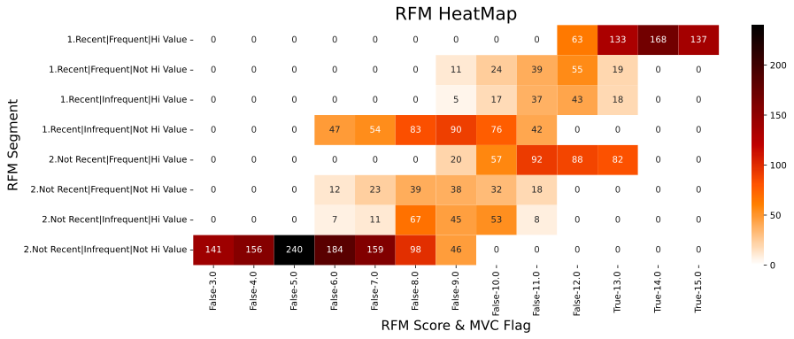
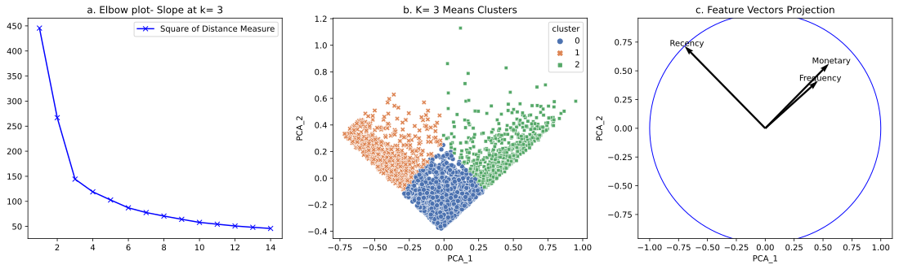
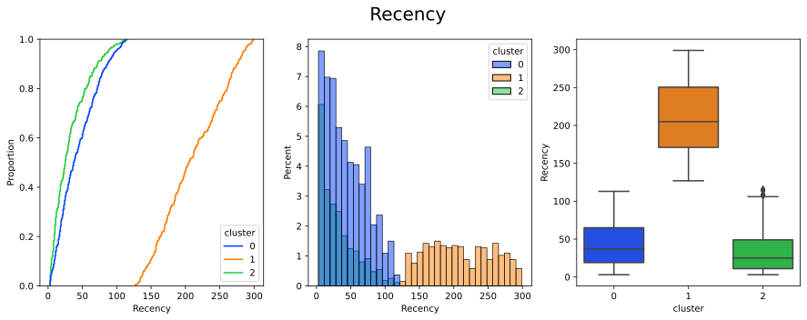
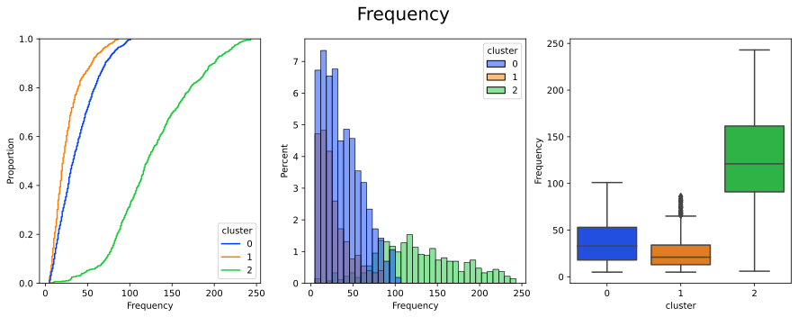
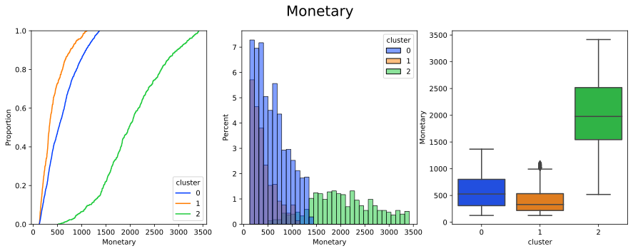
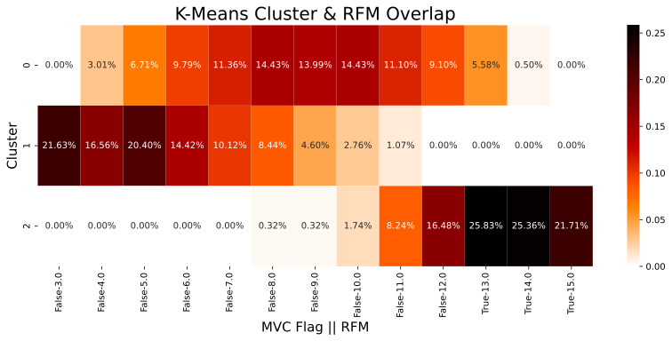
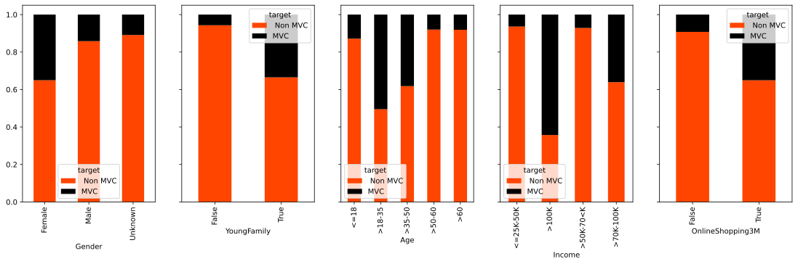

Segmentation & Profiling
Many consumer products, technology and services companies are looking at digital channels as an opportunity to transform themselves from operation/ technology into consumer company. Transforming to a consumer first organization requires fingerprinting consumers, understanding consumer behavior. More importantly, understand and improve the effectiveness of digital transformation through consumer engagement at segment level.
Recency, Frequency & Monetary (RFM)
A Recency, Frequency and Monetary (RFM) score framework provides a baseline method to aggregate consumer behavior and identify segments of consumers. The basic hypothesis is that consumers with high recency, frequency and monetary value are most valuable to a company. In the above example from a standard data set, the last three columns with high RFM value (>13) and Most Valuable consumer = True belong mostly to the High value segment (label). Programmatically the RFM, labels are defined as follows:
df['R_Score']= pd.qcut(df.Recency,5, labels=[5,4,3,2,1]).astype(float)
df['F_Score']= pd.qcut(df.Frequency,5, labels=[1,2,3,4,5]).astype(float)
df['M_Score']= pd.qcut(df.Monetary,5,labels= [1,2,3,4,5]).astype(float)
df['RFM']=df.R_Score+df.F_Score+ df.M_Score
df['RFM_Score']= pd.qcut(df.RFM,5,labels= [1,2,3,4,5]).astype(float)
# Most Valuable Consumers
df['MVC']= df.RFM>= 13
# Segments
df['RFM_labels']= list(zip(np.where (df.R_Score >= 4, '1.Recent', '2.Not Recent'), np.where (df.F_Score >= 4, 'Frequent', 'Infrequent'), np.where (df.M_Score >= 4, 'Hi Value', 'Not Hi Value')))
df['RFM_labels']= df.RFM_labels.agg('|'.join)
This is a easy means of segmenting behavior not only for consumers, but even for machines, app instances etc and can be derived across transaction (debit versus credit) and channel types. It's intuitive and easy to build and interprete. As variability in business environment and the complexity of consumer engagementgement increases, it then becomes imperative to consider a more robust technique. Using unsupervised learning to cluster consumers using their omni channel behavior can be interesting approach. While not awefully sophisticated K-Means clustering works reasomably well from few thousands to a few hundred thousand consumer record
K- Means Clustering
The above diagram is the result of clustering of the said RFM data. In diagram (a) the Elbow plot there is significant change in slope at K=3 and we choose to build the cluster for K=3. Diagram (b) is the two diensional representation of the multi dimensional space in the form of principal components (PCA). This shows 3 well formed clusters ina wedged shaped profile. Investigating this furter, (c) is a quiver plot of the RFM feature vectors as projection on to the 2D PCA space. The Recency and the Monetary features are orthogonal to each other, meaning little or no correlation/ projection on each other. However, the Frequency and Monetary value features are very closely aligned. This is usually observed in scenario where product/ service catgeories or pricing variability within category is less.
The above diagram shows the distribution of Recency values. cumulative probabiluty distribution of cluster= 2 clearly stands out. The box plot for recency for 2 shows hat the recency values are a lot higher than for both cluster 0,1. Why at all these 2 clusters are seperate is a good question. The answer lies in how K- means works- using a distance measure from a centroid to assign clusters to points. The observations are also true for Frequency and Monetary value as well
 Heuristics versus Machine Learning
Merging the RFM segment and the K-Means clusters provides interesting insights. Cluser=2 nominally coincides with MVC consumers. So far we have worked to segment consumers by "what" have they done? "How" have a purchased? These answers the "how"? and "what?" questions. Not so much the "who?" question. The "who" question can be answered through profiling the consumer data
Profiling
To demonstrate how profiling works we shall interprete and try to answer the "who?" question for cluster=2. For a company transforming itself it is hard to get an abundance of consumer profile information. There are legala nd privacy issues as well. Some industries may mandate the capture of certain consumer profile data but in most cases there are stipulations around how not to use them. More importantly, the MAANG companies over time have acquirdd vast quantities of consumer profile, psychographics, demographics information through permission. There are also data providers who see to provide high quality primary data about consumers. In our example we choose 5 basic variables whose distributions with respec to MVC are shown below
 It does appear that MVCs are distributed in certain pockets of the consumer base. A standard way to profile consmers of a certain segment is to classify them against other segments- MVCs versus non-MVC for example. In this case a simple Decision Tree with max_depth=4 has been developed for illustrative purposes
While this model can be significantly improved and generalized through ensembling and hyper-parameter tuning, the current decision tree has some interesting insights. The quality metrics used here is entropy fucntion and the split is using information gain. Entropy function is between 0 an 1. 1 signified complete disorder and 0 means complete order. The right hand most bottom leaf has a entropy of ~.7 translating to about 80% of the node to be MVCs. This just shows that personas fulfilling certain criteria may be valuable in the future. Generalized business rules can be generated from the tree.
The following is the business rule that can be generated from the decision tree to score/ segment incoming consumers into a MVC/ Non MVC group |--- YoungFamily_True <= 0.50 | |--- Income_>100K <= 0.50 | | |--- Income_>70K-100K <= 0.50 | | | |--- class: 0 | | |--- Income_>70K-100K > 0.50 | | | |--- class: 0 | |--- Income_>100K > 0.50 | | |--- class: 0 |--- YoungFamily_True > 0.50 | |--- OnlineShopping3M_True <= 0.50 | | |--- Income_>100K <= 0.50 | | | |--- class: 0 | | |--- Income_>100K > 0.50 | | | |--- class: 1 | |--- OnlineShopping3M_True > 0.50 | | |--- Age_>18-35 <= 0.50 | | | |--- class: 0 | | |--- Age_>18-35 > 0.50 | | | |--- class: 1
OK, so what's the point of all this?
As companies ransform digitaly and onboard identifiable consumers, it is neccessary what group in the population of newly acquired consumers are performing as expectation and improvemnts over the non-consumer lines of business. Customer segmentation using hyper dimensional clustering techniques helps to create groups of equivalent consumers in a loss function optimized framework. Once that is achieved and clusters determined, it is necessary to understand who they are. That helps in two ways:
- Fine tune product, service value proposition for specific cluster persona
- Target newly acquired consumers with specific personas with offers when purchase patterns are not available
In our case we can look at the business rule to see that Young Family, aged betweeb 18-35 and who shopped online in the past 3 months detemien the SVC.
The spirit of this work is from a recently concluded Data Science engagement, the base RFM data is generally available online and the consumer profile information is engineered with bit of imagination!